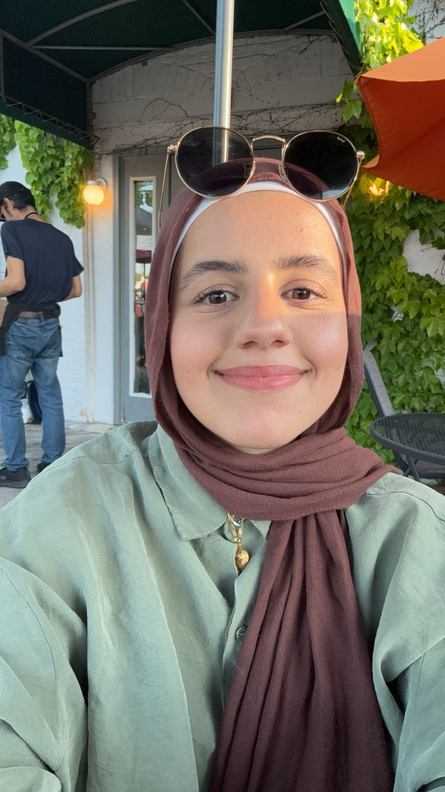

ABOUT AYAH ALMUSADDY
basic info
20 years old
junior at university of illinois at chicago
major: computer science
minor: psychology
hobbies: reading, writing, talking, running, cuddling my cat, looking at my cat, playing with my cat
favorite topics: literature, politics, sociology and psychology, neuroscience, my cat
current favorite songs:
Promiscuous - Nelly Furtado ft. Timbaland
coney island - Taylor Swift ft. The National
I Know the End - Phoebe Bridgers
I Told You Things - Gracie Abrams
Like Him - Tyler ft. Lola Young
Wildflower - Billie Eilish
favorite book:
A Thousand Splendid Suns - Khaled Hosseini
currently reading:
The Way of Kings - Brandon Sanderson
1984 - George Orwell
future goals/aspirations:
run a marathon
write a novel
make a lot of money
have a job i love
get a graduate degree (not sure in what; i just want one)
why a blog?
i like to organise my thoughts into words occassionally
i want to do more research and writing
i enjoy many topics of discussion and what better way to engage with them than to write about them
as a CS major, i do not write nearly enough as i should and im afraid if i don't get back into it - i'll lose my ability to write coherently
i like to read things ive written (i also hate this)
because i want to